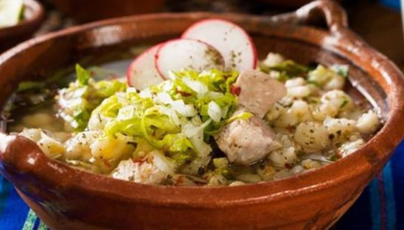

¿Qué es el "Pozole"?
Del náhuatl pozolli, de tlapozonalli, que significa espumoso, es un caldo hecho a base de granos de maíz cacahuazintle, el cual se precoce durante dos horas y en ese proceso, los granos de maíz pierden la cáscara fibrosa que los cubre y cuando hierven se abren como flor, lo cual les da una apariencia de espuma.
Ingredientes para el "Pozole":
- 5 Litros de Agua.
- 1/2 Cebolla.
- 4 Dientes de Ajo.
- 3 Cucharadas de Sal.
- 1 Kilogramo de Maíz pozolero precocido.
- 500 Gramos de Costillas de cerdo cortadas en trozos.
- 1 Kilogramo de Pulpa de cerdo cortada en trozos.
- 5 Hojas de laurel.
- 14 Chiles guajillo sin semillas y remojados en agua caliente.
- 2 Chiles anchos sin semillas y remojados en agua caliente.
- 2 Tazas de Agua.
- 1/4 Cebolla.
- 2 Dientes de Ajo.
- 1 Cucharadita de Comino.
- 1 Cucharadita de Pimienta negra molida.
- Orégano seco.
- Chile en polvo.
- Cebolla picada finamente.
- Lechuga romana fileteada.
- Rábanos cortados en rodajas.
- Limones.
- 10 Tostadas de maíz.
- 1 Envase de Media Crema refrigerada (190 g).
- 100 Gramos de Queso cotija rallado.

Preparacion:
- Calienta los 5 litros agua con 1/2 cebolla, 4 dientes de ajo y la sal, cuando hierva añade el maíz y cocina por 30 minutos a fuego alto o hasta que el maíz reviente. Añade la costilla, la pulpa de cerdo y el laurel; cocina por 1 hora con 30 minutos o hasta que la carne esté suave. Retira el ajo, la cebolla, las hojas de laurel y la pulpa de cerdo, deshebra la carne y reserva.
- Licúa los chiles con 2 tazas de agua, 1/4 de cebolla, 2 dientes de ajo, el comino y la pimienta, cuela y vierte en la olla del maíz; cocina por 30 minutos más.
- Sirve el pozole y acompaña con orégano, chile en polvo, lechuga, rábanos, limón y tostadas con Media Crema y queso Cotija..
Caja de comentarios